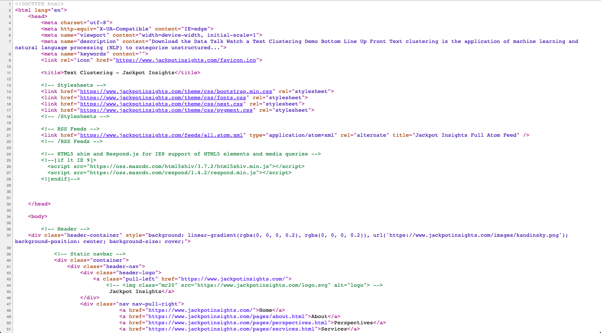

Bottom Line Up Front
A web spider (also referred to as a ‘scraper’ or a ‘crawler’) is a program or script which browses websites. Spiders are usually used to collect information, though they can also be used to automate maintenance tasks like checking links and validating code. Though not perfect, spiders are an effective and reasonably reliable method for collecting data, especially when no API is available.
Overview
The purpose of this white paper is to give the reader a high-level understanding of web spiders and to briefly examine their benefits and concerns. This white paper, therefore, is divided into three sections.
-
How spiders work
-
Practical uses for spiders
-
Limitations of spiders
How Spiders Work
Spiders, in short, visit websites in a systematic matter and return (‘scrape’) the source code from those sites. For readers not familiar with coding or web development, follow these steps to help make this point a bit more clear (note: these steps are for persons visiting the site on Chrome)
-
Click on the view tab on the top left corner of your screen
-
Click on developer
-
Click on view source
You should be looking at something like this…

This is the ‘source code’ mentioned above. Imagine if you were to visit every link on this website, view the source code, then copy and paste it into a text file. That, basically, is web scraping.
Of course, the text from the source code is not formatted in a manner in which we can use it immediately. There are a lot of tags and div objects in the way, so the text has to be cleaned. Also, who would ever have enough time to manually copy and paste source code into a database? Fortunately, there are some great tools like Beautiful Soup, Selenium, and Scrapy for addressing these problems of scalability and messy text. I won’t, however, go into how each of these tools work in this short write up.
Practical Uses for Spiders
Spiders are most commonly used to scrape information from webpages and to add it to a database wherein it can be cleaned and used. There are numerous applications for spiders, ranging from populating databases to support search engines to testing web links. Recently, I helped a client use web scraping to build a database on businesses for sale. My client was looking to buy businesses, but didn't have the time or resources to browse the thousands of web pages dedicated to listing businesses for sale. To solve for this, I created a spider which would scrape all of the listing info from these sites and add the info to a Postgres database. Once in the database, all of the text was cleaned and structured. As a result, rather than having to browse thousands of web pages, my client could run a few simple queries in the database to find listings of interest to them.
Limitations of Spiders
Despite their many uses, there are some drawbacks to web spiders. First, they cannot be used everywhere. Most well-developed e-commerce and social media sites, for instance, have been deliberately engineered to make them hard to scrape. There are ways around this, but some of these work-arounds can be maintenance intensive, or even sketchy. (If you are not sure what you can and cannot scrape on a webpage, check the robots.txt file for the page)
Additionally, spiders can break somewhat easily. That is not because they are inherently bad, or poorly written. They tend to break easily because they sites they are scraping can change frequently. For example, imagine if you wrote a spider to scrape publicly available data from the NYC 311 service, and then structure that data in a spreadsheet on your desktop. As long as the website which is hosting the NYC 311 data doesn’t change, your spider will function properly. But as soon as the website changes, or the data you are scraping is formatted differently, the spider will begin to fail.